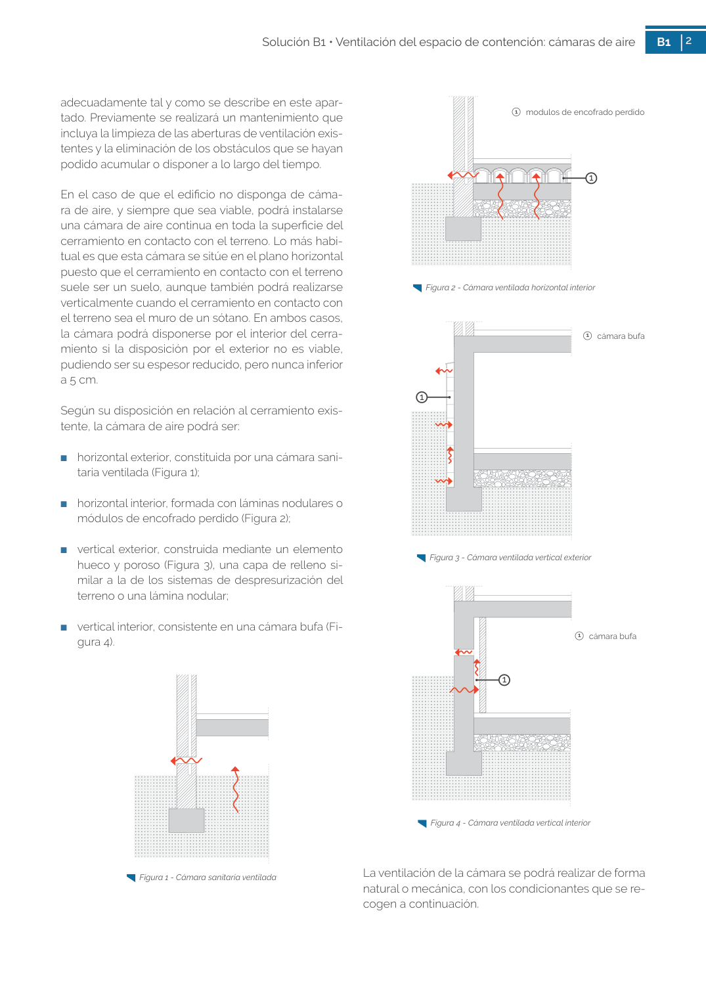

<!doctype html>
<html lang="es"><head><meta charset="utf-8">
<meta name="viewport" content="width=device-width, initial-scale=1">
<title>Solucion B1 - Ventilacion del espacio de contencion: Camara de aire / SOLUCIÓN B1</title><link rel="stylesheet" href="../estilo.css">
</head><body>
<nav><a href="../index.html">Índice</a> › <a href="../doc/guia-pdf-f3314b0414fe-sin-fecha-e58e54b822cf.html">GUIA</a></nav>

<h1>Solucion B1 - Ventilacion del espacio de contencion: Camara de aire / SOLUCIÓN B1</h1>
<header class="meta"><p><strong>Guia de rehabilitacion frente al radon Fichas</strong> · edición sin-fecha · capa guia</p>
<p>Documento <code>GUIA-PDF-f3314b0414fe</code> · SHA-256 del PDF <code>e58e54b822cf4ab00e258f0eb50c0f06a8c04e3730a7f530d224485e2a5bb02e</code></p>
<p><a href="../../contenido/docs/GUIA-PDF-f3314b0414fe/sin-fecha__e58e54b822cf/fuente.pdf">Copia fiel del PDF fuente</a> · <a href="https://www.codigotecnico.org/pdf/GuiasyOtros/GuiaRadon/Guia_de_rehabilitacion_frente_al_radon+Fichas.pdf">Fuente oficial</a></p>
<p><a href="https://www.codigotecnico.org/Guias/GuiaRadon.html">Ficha de la disposición en la fuente oficial</a></p>
<div class="cita"><p><a href="../../contenido/docs/GUIA-PDF-f3314b0414fe/sin-fecha__e58e54b822cf/fuente.pdf#page=2">Créditos y autoría en el PDF fuente</a>. Reproducción con cita de fuente y autores.</p>
<p>Permiso literal: Se permite la reproducción total o parcial del contenido de este nible en el momento de su publicación. No se aceptará por las institu­ documento siempre y cuando se cite la fuente original</p>
<details><summary>Leer los créditos completos y la autoría</summary><pre class="literal">Este documento ha sido elaborado por el Instituto de ciencias
de la construcción Eduardo Torroja (IETcc) bajo la supervisión
de la Dirección General de Agenda Urbana y Arquitectura del
Ministerio de Transportes, Movilidad y Agenda Urbana (MITMA).

El IETcc, perteneciente al Consejo Superior de Investigaciones
Científicas (CSIC), es el centro de investigación en edificación
de referencia en España. La Unidad de Calidad en la Construc­
ción del IETcc asesora al MITMA en la elaboración del Código
Técnico de la Edificación que, desde el año 2019, cuenta con la
sección HS6 Protección frente a la exposición al radón.

Dirección y Coordinación:
Ministerio de Transportes, Movilidad y Agenda Urbana
 Isabel Marcos Anasagasti
 Raquel Lara Campos
 Eduardo González de Prado
Instituto de ciencias de la construcción Eduardo Torroja CSIC
 Pilar Linares Alemparte

Autoras:
 Pilar Linares Alemparte
 Sonia García Ortega

Colaboradoras:
 Virginia Sánchez Ramos
 Karina Angélica García Pardo

Edita:
 Centro de Publicaciones Secretaría General Técnica
 Ministerio de Transportes, Movilidad y Agenda Urbana©

Entidad colaboradora:
 Consejo Superior de Investigaciones Científicas · CSIC
 Ministerio de Ciencia e Innovación

    Catálogo de publicaciones de la Administración General
    del Estado: publicacionesoficiales.boe.es

    Centro virtual de publicaciones del Ministerio de Transpor­
     tes, Movilidad y Agenda Urbana: www.mitma.gob.es

    Página web del Código Técnico de la Edificación:

                                                                                                                                                                              SECRETARÍA                                                                                                                                                                     GENERAL                                                                                                                                                                         DE    www.codigotecnico.org                                                                                                                                              AGENDA URBANA                                                                                                                                                                           Y VIVIENDA                                                                                                                                                 MINISTERIO                                                                                                           GOBIERNO                                                                                                                           DE                                                                                                                                           TRANSPORTES,                                                                                                                                                 MOVILIDAD                                                                                                             DE ESPAÑA                                                                                                                               Y AGENDA                                                                                                                           URBANA                                                                                                                                                               DIRECCIÓN                                                                                                                                                                     GENERAL                                                                                                                                                                         DE
Maquetación y diseño gráfico:                                                                                                     AGENDA URBANAY ARQUITECTURA
 Lapizmente. Estrategia • Diseño Gráfico


                                                                                                                                             CIENCIAFotografía portada:                                                                                GOBIERNODE ESPAÑA      MINISTERIODEE INNOVACIÓN
 Sonia García Ortega

Los contenidos o ideas recogidas en este documento pertenecen a
sus autores. Este documento está basado en el conocimiento dispo­     Se permite la reproducción total o parcial del contenido de este
nible en el momento de su publicación. No se aceptará por las institu­     documento siempre y cuando se cite la fuente original y a sus
ciones ni los autores implicados responsabilidad de ningún tipo por el                                                                    autores.
uso de estas recomendaciones. Las figuras tienen carácter ilustrativo
y no deben interpretarse como detalles constructivos.</pre></details></div>
<div class="aviso"><strong>Alcance y límites</strong><ul><li>Extracción automática sin revisión técnica humana completa. Contraste tablas, fórmulas, notas y excepciones con el PDF. La edición disponible no determina la vigencia ni la aplicabilidad a un proyecto.</li><li>Guia o documento divulgativo; no es texto normativo.</li><li>Extracción automática; el cotejo humano está pendiente.</li><li>Semántica y tablas no equivalen a validación exhaustiva.</li></ul></div></header>
<div class="cita">ID técnico a0149 · páginas físicas <a href="../pagina/guia-pdf-f3314b0414fe-sin-fecha-e58e54b822cf__p0043.html">43</a>, <a href="../pagina/guia-pdf-f3314b0414fe-sin-fecha-e58e54b822cf__p0044.html">44</a></div>
<nav><a href="guia-pdf-f3314b0414fe-sin-fecha-e58e54b822cf__a0148.html">← a0148</a> · <a href="guia-pdf-f3314b0414fe-sin-fecha-e58e54b822cf__a0150.html">a0150 →</a></nav>
<p>Formatos: <a href="../../contenido/docs/GUIA-PDF-f3314b0414fe/sin-fecha__e58e54b822cf/apartado/a0149__solucion-b1.json">JSON del segmento</a> · <a href="../../contenido/docs/GUIA-PDF-f3314b0414fe/sin-fecha__e58e54b822cf/apartado/a0149__solucion-b1.md">Markdown</a></p>
<pre class="literal">SOLUCIÓN B1
B1
3. EFECTIVIDAD
La ventilación de la cámara de aire que actúa como
espacio de contención es una de las soluciones más
efectivas. No obstante, para que esta efectividad sea
óptima, se recomienda su empleo junto con otras
soluciones como la barrera de protección frente al
radón (Solución A1 y Solución A1.1) o el sellado de
fisuras, grietas, encuentros y juntas (Solución A2), es­
pecialmente para concentraciones de radón medidas
en los locales habitables superiores a 600 Bq/m3.
Su efectividad podrá verse afectada si existen ele­
mentos de paso que conecten estas cámaras con lo­
cales habitables, como puedan ser trampillas de ac­
ceso. En este caso será necesario que las trampillas
sean poco permeables al aire según lo detallado en
la Solución A3.
Para comprobar si la efectividad de la solución es ade­
cuada, se medirá la concentración de radón alcanzada
dentro de los locales habitables tras la intervención.
4. DIFICULTAD DE INSTALACIÓN
En el caso de que el edificio ya disponga de cámara
de aire, es una solución sencilla que no requiere un
grado de especialización alto.
En el caso de que se construya una nueva cámara de
aire, es una solución que requiere un grado de espe­
cialización medio.
5. CÓMO SE CONSIGUE
En el caso de que el edificio ya disponga de cá­
mara de aire, esta solución consistirá en ventilarla
1. FINALIDAD
La ventilación de la cámara de aire empleada como
espacio de contención tiene como finalidad reducir la
concentración de radón a la que los cerramientos de
los locales habitables se encuentran expuestos. Se
basa en favorecer mediante ventilación la expulsión
del aire con alta concentración de radón de la cámara
y que no tienda a penetrar en los locales habitables.
El espacio de contención es un espacio situado entre
el terreno y los locales a proteger que recibe el radón
proveniente del terreno y que, mediante ventilación
natural o mecánica, lo expulsa al exterior del edificio
mitigando el paso de radón al interior de los locales
habitables. Puede actuar como espacio de contención
un local no habitable o una cámara de aire.
En esta Solución B1 únicamente se trata la ventilación
de cámaras de aire. La ventilación de los locales no
habitables utilizados como espacio de contención se
trata en la Solución B2.
2. CUÁNDO SE UTILIZA
Esta solución se empleará generalmente cuando el
edificio ya disponga de una cámara de aire que pueda
actuar como espacio de contención, por ejemplo, una
cámara sanitaria.
Si el edificio no dispone de cámara de aire, podría ser
viable su colocación dependiendo de factores como
la altura libre disponible, la superficie útil de la planta,
la posibilidad de intervenir por el exterior del muro, así
como de otros condicionantes económicos o técnicos.
(1)  Se ha considerado un edificio que dispone de una cámara sanitaria en la
que se mejora la ventilación natural

2
Solución B1 • Ventilación del espacio de contención: cámaras de aire
B1
2</pre>
<figure><a href="../../contenido/docs/GUIA-PDF-f3314b0414fe/sin-fecha__e58e54b822cf/figura/p0043.png"></a><figcaption>Página visual 43, para contrastar fórmulas, tablas y figuras.</figcaption></figure>
<figure><a href="../../contenido/docs/GUIA-PDF-f3314b0414fe/sin-fecha__e58e54b822cf/figura/p0044.png"></a><figcaption>Página visual 44, para contrastar fórmulas, tablas y figuras.</figcaption></figure>
<footer>Generado estáticamente desde el corpus normalizado; sin JavaScript ni servicios externos. El HTML es una vista reproducible; conserve la fuente y la edición al citar.</footer>
</body></html>
